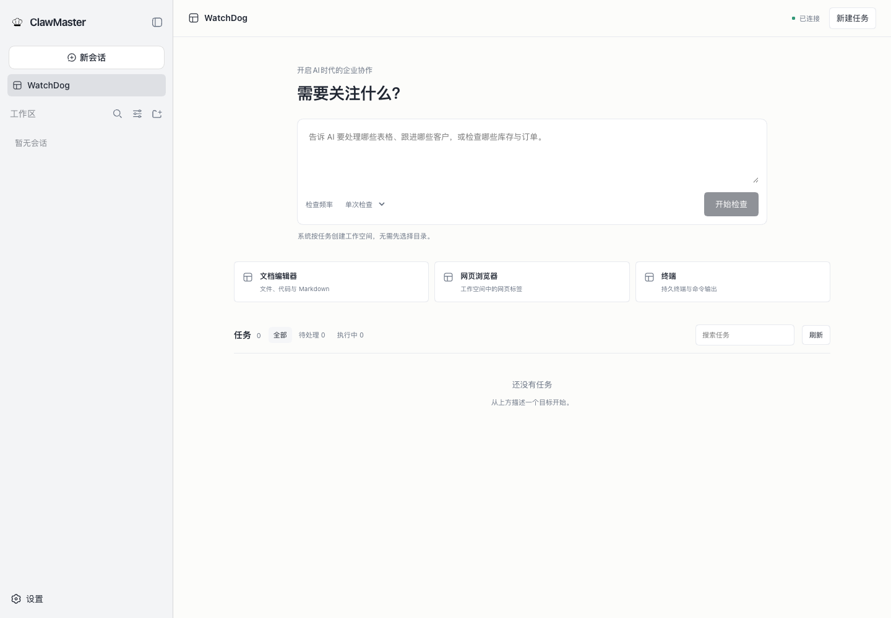

01 / 先确定使用范围
先管好一个明确的问题。
本版适合由个人或专人负责的本地工作台。你可以让 AI 检查客户跟进、核对库存记录、整理办公资料，并把需要你决定的事项集中到原任务会话。先选一小批资料，把结果与原始记录对照。
这次练习要做到
从三条客户记录中找出需要跟进的事项，给出依据和下一步，由你确认谁来处理、何时反馈。
仍由你负责
确认业务事实、落实同事分工、复核批准和最终验收。负责人、期限与完成标准目前写在任务说明里，不会自动变成组织账号和人员派单。
CRM/ERP 是本机单用户记录，并非企业现有系统的连接器。本版尚不提供完整的多人共享、部门权限或企业管理中台能力。
02 / 安装与模型准备
先确认桌面能打开，模型能回应。
- 在官网下载区选择匹配系统与芯片的安装包。macOS 的 Apple Silicon 与 Intel 是两个安装包；Windows 当前提供 x64。
- 安装并打开 ClawMaster。首次启动需要联网准备 Node.js 和运行依赖，请等待准备完成。安装包大小不代表完整运行环境占用。
- 已有 DSH 模型配置可复用。尚未配置时，使用首次教程末页的模型设置（按需）入口，填写你自己的模型服务配置；不要把 API Key 写进任务描述。
- 进入 WatchDog 后做下文的虚构数据检查。能正常收到模型结果，才说明本次任务所需的模型连接可用。
左侧有 WatchDog 入口，主区有“需要关注什么？”和“检查频率”。右上角“已连接”表示界面连接上了运行时，单凭它不能证明 API Key 或聊天平台已验证。
没有准备完成：先查看启动页的具体错误，确认网络可访问依赖来源后重试。若模型报凭据、额度或地址错误，修正模型配置后回到原任务；不要反复新建相同任务。
macOS 包尚未公证，Windows 包没有发布者代码签名；下载区提供 SHA-256 与完整发行说明。Windows 已在发布测试机验证安装与重启，微软 Windows Sandbox 的干净环境尚未实测。
03 / 首次教程五步
读完教程，再创建实际任务。
新用户会看到“用 WatchDog 管好企业日常”。用下一步和上一步浏览，最后选择进入 WatchDog 管理台。已有用户可从设置 → WatchDog 教程重看。
- 确定本周要管的范围：写明时间段、客户或订单范围，以及想收到的清单。
- 写清负责人、期限和验收标准：约定谁复核、何时反馈、什么证据算完成。
- 让业务资料支撑管理结论：指定记录和文件；缺少资料时要求列出缺口，不能猜测。
- 选择巡检节奏，确认业务变更：先做单次检查，看到实际结果后再考虑重复检查。
- 跟踪任务，复核结果并落实整改：核对依据、补充要求，再验证后续结果。
阅读、跳过或重看教程不会创建任务、调用模型或连接聊天账号。出现“教程进度未能保存”时，保留当前页面并重试；这不表示模型配置已被修改。
04 / 第一次客户跟进检查
用三条示例记录，跑通检查与复核。

- 打开左侧 WatchDog，将下方完整练习粘贴到需要关注什么？文本框。
- 将检查频率保持为单次检查，点击开始检查。系统按任务准备工作空间，无需先挑选目录。
- 查看进入的任务会话及其结果；之后可以回到 WatchDog，用搜索任务找到并打开同一会话。
- 按下方验收点核对结果，发现遗漏时在原会话补充要求。
示例客户甲属于已逾期且未完成；示例客户乙在检查期限内；示例客户丙已完成，应被排除并说明原因。表格形式可以不同，但三项判断和原始日期必须可核对。
结果不符合要求：在原会话补充：“请按给定日期重新检查，列出每个判断对应的原始行，不要把建议当成已完成的动作。”本练习只是演示分析，不会验证实际 CRM/ERP 接入。
05 / 换成你的业务资料
先确认资料在哪里，再要求结论。
第一次真实检查，先使用一份范围明确的副本，并在任务中写出文件名、时间范围和允许的操作。任务会话有自己的工作空间；把文件副本放到该空间后，在原会话明确指定。引用一个文件名并不代表系统已经找到或获准读取它。
| 资料 | 怎么开始 | 如何核验 |
|---|---|---|
| CSV / TSV | 提供有表头的文件，说明分隔符、去重或筛选规则。首次要求只读统计；确需输出时另存新文件。 | 对照原始行和统计。界面预览有行数上限，不能用预览行数当作完整结果行数。格式错误时先修正源文件。 |
| Word / Excel / PowerPoint | 从文档编辑器打开基础 DOCX、XLSX、PPTX，人工核对内容。需要模型分析时，明确指出所需文件和范围，并检查读取结果。 | 能在编辑器打开不等于模型已经成功读取。复杂格式或提取失败时，提供相关文本或导出适合分析的数据副本。 |
| CRM / ERP | 在设置 → 侧边卡片找到组件，从功能设置选择在右侧打开，检查当前本机记录。可人工维护，也可让 AI 在批准后修改。 | 新安装的业务库从空记录开始。核对客户、日期、数量与订单状态；不能假定它已同步企业现有系统。 |
| 笔记 | 从侧栏标签选择器打开笔记，新建或打开 Markdown 笔记，编辑后保存。需要工作总结时再让 AI 整理。 | 重新打开核对已保存内容；AI 建议可先看差异，再决定是否应用。 |
应用和本地记录保存在你的电脑上。模型执行任务时，所需内容会发送到你配置的模型服务；按资料范围选服务和权限。本地存储不代表模型处理完全离线。
06 / 审批与修改
先核对影响，再允许这一次写入。
- 先在任务中要求只读检查和修改建议。新会话默认采用只读文件访问与询问审批；已有用户保存的权限设置优先，开始真实任务前核对当前设置。
- 需要更新时，要求明确说明目标记录、原值、拟改值和原因。AI 对 CRM/ERP 的每次新业务写入，以及对笔记的修改，都需要单次批准。
- 在原会话逐项读完审批内容。与任务范围相符才批准；内容不符时拒绝或取消，并补充正确要求。写有“只读”的任务描述不能代替权限设置。
- 批准后查看实际回执，并回到对应记录或文件核对。批准代表允许执行，不代表执行已经成功。
被拒绝或取消的该次业务写入不会执行。若记录已被其他操作修改，重新读取并比较最新值，核对后再形成新修改；不要依赖旧草稿覆盖最新记录。
订单提交会改变库存；销售库存不足时整笔提交回滚。已提交订单不能重复生效。直接在已认证界面点击保存属于你发起的人工编辑，不会再弹一次 AI 写入审批。
07 / 复核结果与整改
任务没有运行，不等于工作完成。
在 WatchDog 的任务列表里，先看待处理，打开对应任务处理交互。可用搜索任务查找原会话，用刷新重新读取列表。
| 看到的状态 | 你要做什么 |
|---|---|
| 等待审批 | 打开原任务，核对操作范围和影响，批准或拒绝。 |
| 等待回答 | 补齐问题所需的业务资料；不清楚的事实说明待确认。 |
| 等待计划审核 | 确认计划是否覆盖目标、资料范围和验收要求。 |
| 执行中 | 查看当前进度、错误或需要介入的环节，避免重复发起。 |
| 当前未运行 | 读取实际结果。它只表示当前没有执行，不能直接判定业务成功。 |
- 查依据：每项结论能否回到具体客户、订单或文件内容？
- 查动作：“建议跟进”是否真的由负责人接手？需要同事执行时，由你确认并落实。
- 查结果：要求补齐遗漏，在原任务继续复核，直到符合事先约定的验收标准。
- 留记录：写明已经确认的事实、待办和下次检查时间，再保存到文件或笔记。
可以补充：“请为每个风险补齐原始记录依据，区分已确认事实、建议与待确认问题；我确认整改后，再按同一标准复查。”不要让一份措辞完整的总结替代实际验收。
08 / 重复检查
先验证一次，再约定下一次。
- 先完成并复核单次检查，确保读取的资料和输出标准正确。
- 需要重复时，在 WatchDog 填好目标，将检查频率选为每小时或每天，再点开始检查创建巡检任务。
- 打开实际任务结果，确认是否安排成功、使用什么时间及对应会话。不能仅凭下拉框的选择就认定已安排。
- 在下一次检查到期后，回到原会话核对真实送达与结果。改变频率前先核查已有安排，避免重复创建。
必须保持应用与任务会话活动。提醒由活动的根任务会话接收，并在它能够接收时返回原对话；关闭应用不会启动操作系统后台调度。不要把本版当作关机后仍运行的企业守护服务。
没有收到检查：先确认应用仍在运行、原任务会话有活动任务，并查看安排结果与原会话状态。重新打开应用不等于漏掉的业务检查已自动完成；先核对缺口，必要时明确发起一次补查。
09 / 保存工作成果
把已复核的内容真正保存下来。
- Office：使用内嵌编辑器自己的保存按钮。关闭、刷新或替换文件出现未保存提示时，取消可保留当前编辑。保存后重新打开核对。
- 笔记：编辑后点击保存。看到待审建议时先检查差异，再决定应用或丢弃。版本冲突时协调最新内容和草稿后再保存。
- 任务描述：尚未受理的草稿只在本次前端加载期间保留。刷新页面或退出应用前，先把重要描述保存到自己的文档。
切换会话、移动或移除面板、退出应用前主动保存 Office 与笔记。当前并非所有原生退出路径都有未保存拦截；不要把“没有弹窗”理解为已经保存。
Office 保存时若磁盘文件已变化，冲突保存会拒绝覆盖；先保留编辑，再核对外部改动。复杂排版、宏、加密文件和旧版二进制格式不在当前兼容验收范围内。删除笔记不进入回收站，确认前先核对对象。
10 / 常见问题与恢复
保留原任务，按错误恢复。
点击开始后报错，目标和频率被锁住了？
这表示原请求可能已经受理。先选择打开原任务核查，查看会话是否已有本次任务；需要重试时使用重试原请求。该入口复用原请求标识，避免重复创建。确认受理前不要另外创建同样的任务。模型或连接配置有问题时先修正它。
任务列表没有结果，或者一直显示连接问题？
确认当前连接状态后点击刷新。如果用了筛选或搜索，先切回全部并清空搜索词。刷新失败时保留原会话并重试，不要通过清空数据来恢复列表。
CRM 或 ERP 是空白，资料没有自动出现？
新安装从本地空库开始，不会自动导入浏览器旧记录，也不会连接企业现有系统。先确认本机有没有所需记录，或把指定资料用于任务分析。需要新增时可人工录入，或让 AI 提议并在批准后写入。
可以扫码连接飞书、微信、企微、钉钉吗？
安装内置 IM 插件不等于完成账号连接。各平台的登录方式、账号条件和可用功能由插件及平台决定，需要逐项配置并实测。首次教程的聊天连接（可选）只是辅助入口；本教程不自动登录，也不会发送消息。
装了 OpenViking Memory，为什么没有跨任务记忆？
该集成需要另行配置记忆服务，桌面默认在连接前保持禁用。服务健康或插件出现在列表中，都不能证明已成功捕获记忆和跨会话检索。可先使用保存的普通笔记完成工作记录。
笔记能打开，但待审建议加载失败？
使用建议区域自己的重试入口；已加载的笔记仍可使用。不要为刷新建议而丢弃正在编辑的正文。出现外部修改时，先协调最新文件与草稿，再决定是否重新载入。
遇到无法恢复的问题，反馈什么信息？
记录程序版本、系统与芯片、出错步骤、预期结果和实际提示。在问题反馈页说明是否可重复；截图先隐藏密钥和业务资料。升级前先保存编辑、结束任务并备份 DSH 主目录，保留该目录以复用凭证和会话。